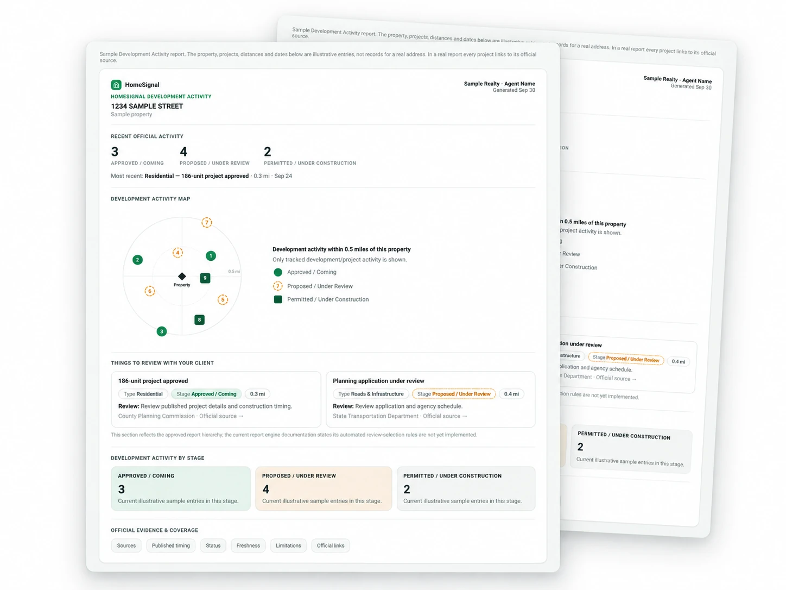

Track changes that impact your quality of life. Receive alerts on changes impacting traffic and water, air, noise and soil pollution.
HomeSignal connects these impacts to proposed developments, construction, infrastructure projects, and local government decisions. HomeSignal helps you understand what’s coming and how it could affect where you live.
No account required.
For real estate professionals
Know what’s changing around a property before your client does.
Explore Enterprise →
Proposed, approved and operating projects on the map.
Permits, zoning and public notices.
City council, planning and other upcoming meetings.
Development, local issues and community updates.
Find a property or explore a ZIP.
See development on the map, plus government activity, meetings and local updates.
Save places and get updates over time.
Built from public records. Every item links to its source.